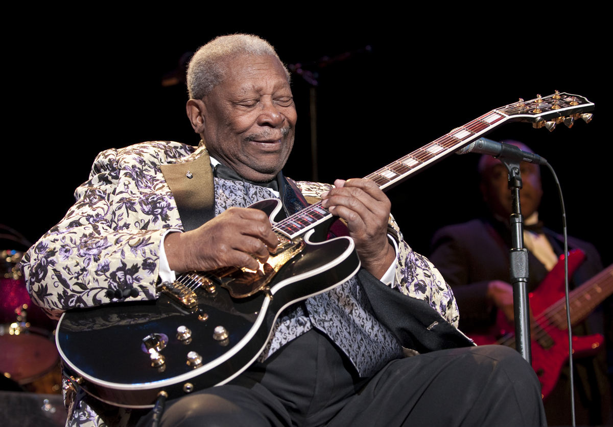

1.Бой
Игра боем – это основа основ, то, чему нужно учиться с самого начала. Играть боем – значит ударять медиатором или пальцами сразу по всем струнам одновременно для получения полного звука, который отлично подходит для ритм-партий. Чтобы сыграть аккорд, зажмите струны на правильных ладах, а другой рукой ударяйте по струнам. Наиболее распространённый вид боя – удар медиатором вниз. Ударяйте по струнам так, чтобы ваша рука двигалась вниз к полу. Когда ваша рука возвращается в исходную позицию наверх, струны можно тоже задействовать. В большинстве случаев под игрой боем подразумевается чередование ударов по струнам вниз и вверх.
2.Смена аккордов
Одной из первых вещей, которой следует научиться начинающему гитаристу, является смена аккордов. Для многих людей, не умеющих играть, перейти с открытого аккорда G на открытый аккорд C является настоящей проблемой. Самым эффективным способом отработки смены аккордов является многократное повторение движения. Поэтому следует выделить некоторое время для ежедневных тренировок. Есть несколько советов, которые помогут вам быстрее научиться переходить с одного аккорда на другой. Для любого аккорда важной составляющей является правильная постановка пальцев. Это гарантирует оптимальное положение пальцев для быстрого перехода на другой аккорд. Если, ставя аккорд, вы зажимаете струны не теми пальцами, какими положено, это создаст вам много проблем в дальнейшем.
3.Перебор
Перебор – это когда для игры вы используете свои пальцы, вместо того чтобы играть с помощью обычного пластикового медиатора. Такой стиль позволяет создавать сложные и интересные комбинации звуков, используя при этом простейшие аккорды. Искусство заключается в том, чтобы выбрать порядок пальцев во время перебора. К счастью, есть метод, с помощью которого весь процесс игры перебором можно существенно упростить. Большим пальцем следует играть все ноты на шестой, пятой и четвёртой струнах. Независимо от того, какой аккорд вы зажали, большой палец всегда должен отвечать только за эти струны. Указательным, средним и безымянным пальцами вы перебираете оставшиеся третью, вторую и первую струны соответственно.
4.Натуральные гармоники
Всякий раз, когда вы играете какую-либо ноту на гитаре, вы слышите определённую высоту тона – звук, который можно идентифицировать с той или иной нотой. Гармоника – это часть звуковой волны, которую генерирует каждая нота. Все ноты производят серии едва заметных отклонений от основного тона, которые называются обертонами, потому что они выше основного тона. Поэтому гармоникой называется основной тон плюс обертоны. Знайте, что гармоники можно использовать в своём музыкальном творчестве в качестве творческого приёма. Самым простым способом извлечения обертона является флажолет. Слегка коснитесь пальцем любой струны прямо над порожком двенадцатого лада и дёрните её. Только не давите на струну, а просто касайтесь. Таким образом вы извлечёте обертон в виде глуховатого звука, отдалённо напоминающего тембр флейты. Тот же приём можно использовать на пятом и седьмом ладах.
5.Баррэ
аррэ – это приём игры на гитаре, когда указательный палец зажимает две и более струн на одном ладу одновременно. Научившись ставить баррэ, вы сможете быстро выучить множество аккордов, просто передвигая руку с поставленными в одной и той же позиции пальцами по грифу, не меняя постановку. В то же время эти движения могут стать серьёзным вызовом для начинающего гитариста, поскольку такие манипуляции требуют, чтобы левая рука была развита. На практике, чтобы освоить этот приём и уверенно ставить баррэ, большинству новичков требуется несколько месяцев. Вам следует принять этот факт и не унывать, когда сперва ничего не будет получаться. Полное баррэ также можно построить, используя частичные баррэ, когда надо зажимать две или три струны вместо шести. Песня Джека Джонсона "Flake" является отличным примером, с которого можно начать обучение этому приёму.
6.Настройка гитары
Одной из главных вещей, которой нужно научиться новичку, является настройка инструмента. Настройка подразумевает регулирование натяжения струн вашей гитары при помощи колков, чтобы каждая давала верную ноту. Если ваша гитара не настроена, всё, что вы играете, будет звучать ужасно, даже при условии, что вы идеально ставите все аккорды. Просто каждая отдельная струна будет выдавать не ту ноту. В идеале хорошо бы приобрести электронный тюнер, с помощью которого вы сможете настроить инструмент с большой точностью. Строй Drop D, пожалуй, является наиболее простым гитарным строем, отличным от стандартного. Гитаристы используют его для того, чтобы разнообразить своё творчество и воплотить те или иные музыкальные идеи. От обычного строя Drop D отличается тем, что шестая струна понижается на один тон – с E на D. Такой строй хорошо подходит, если вам часто требуется играть power-аккорды, характерные для стилей хард-рок и хеви-метал.
7.Ведение басовой линии
Ведение басовой линии относится к типу игры боем, когда на одном аккорде вы играете несколько разных нот на шестой, пятой, четвёртой струнах. Приём часто используется в кантри-музыке, хотя также распространён и в других стилях. Есть несколько способов, чтобы сделать альтернативную басовую линию. Самый простой метод – по очереди играть две самые низкие ноты аккорда. Это гарантирует то, что все ноты аккорда будут сыграны. В аккорде A лучше всего чередовать открытую пятую струну (ноту Ля) и открытую шестую струну (ноту Ми). Потренируйтесь вести басовую линию на этом аккорде, это проще всего.